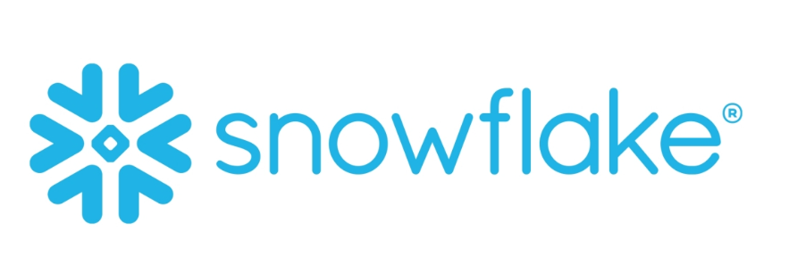
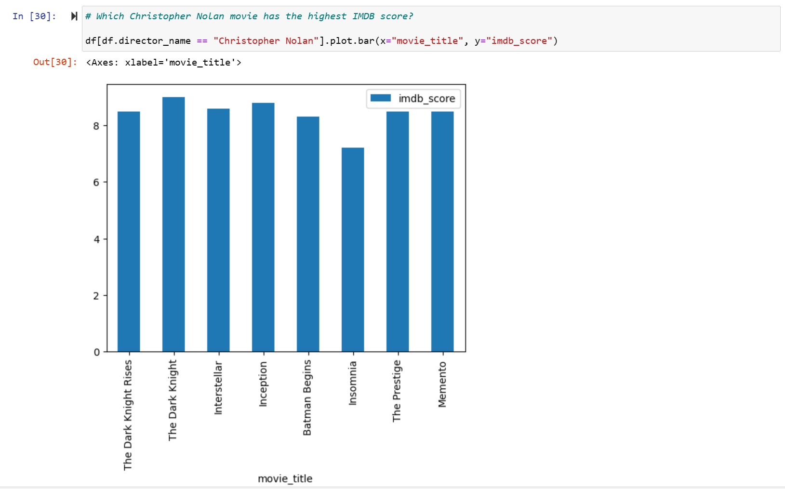
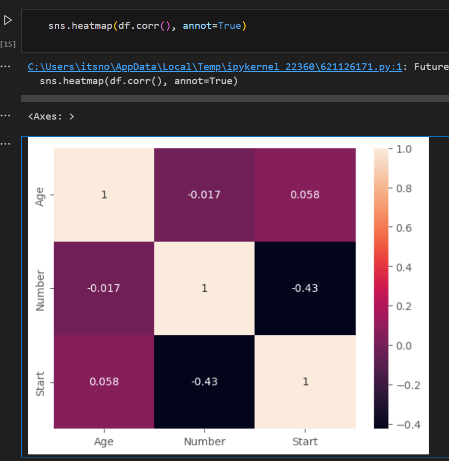

Exploratory data analaysis in Microsoft SQL server (with data cleaning in Excel) in preparation for visualization in Tableau.
Nashville real estate data cleaning in Microsoft SQL server

Employee Survey data transformed using Power Query with visualizations and dashboards finalized in PowerBI.

Data cleaning of a customer call list using Pandas in a Python Jupyter notebook.

Exploratory data analysis of a popular YouTube channel using a Youtube API with Pyton in a Jupyter notebook.
Data cleaning and dashboard creation in Excel using raW bike sales data from a company.

Using the Snowflake UI to identify and correct data quality issues.
Exploratory data analysis in Pandas via Jupyter notebook using data on global populations.
Exploratory data analysis using the Chuck Norris API with Pandas in a Python Jupyter notebook.
Exploratory data analysis using the Airbnb data with Pandas in a Python Jupyter notebook.
Natural Language Processing analysis comparing 1984 the novel and 1984 the Van Halen Album in a Python Jupyter notebook.

Exploratory data analysis using data from IMDB in a Python Jupyter notebook.
We use scikit-learn in a Jupyter lab notebook to build simple linear regression models. We apply applied scikit-learn and statsmodels to regression problems. We employ EDA with seaborn and pandas.
We train a Linear Regression model to predict life expectancy. The dataset was initially obtained from the World Health Organization (WHO) and United Nations websites.

A decision tree and random forest classifier was built, trained, and tested in order to classify Kyphosis.